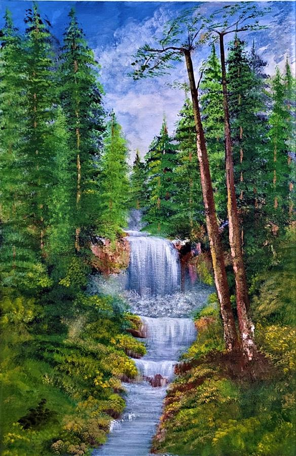

Why art is important?
morbi dictum. Vestibulum adipiscing pulvinar quam. In aliquam rhoncus sem. In mi erat, sodales eget, pretium interdum, malesuada ac, augue. Aliquam sollicitudin, massa ut vestibulum posuere, massa arcu elementum purus, eget vehicula lorem metus vel libero. Sed in dui id lectus commodo elementum. Etiam rhoncus tortor. Proin a lorem. Ut nec velit. Quisque varius. Proin nonummy justo dictum sapien tincidunt iaculis. Duis lobortis pellentesque risus Aenean ut tortor imperdiet dolor scelerisque bibendum. Fusce metus nibh, adipiscing id, ullamcorper at, consequat a, nulla.
About Art
Art has been a part of human culture for centuries. It is used to express emotions, communicate ideas and is also a way of passing knowledge from generation to generation. Art is important in our cultural and social life because it is the medium through which we process emotions and ideas. In The Origin of the Work of Art, German philosopher and thinker Martin Heidegger described the nature of art in terms of the concepts of being and truth. He sees art not only as a way of expressing an element of truth in a culture, but as a means of creating it and providing a springboard from which "what is" can be revealed. Works of art are not just reproductions of things as they are, but actually generate a shared understanding of the community. Every time a new work of art is added to any culture, its meaning of existence is fundamentally changed.
History of Art
The origins of art history can be traced back to the Prehistoric era, before written records were kept. The earliest artifacts come from the Paleolithic era, or the Old Stone Age, in the form of rock carvings, engravings, pictorial imagery, sculptures, and stone arrangements.
How is art represented in culture?
Art is a reflection of society and culture. It helps us understand what we are as human beings and influences how we relate to each other. Art is an expression of our inner thoughts, feelings, and experiences. It's also an expression of creativity that can be used for self-reflection or social influence.